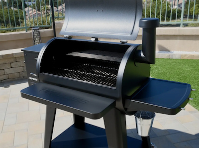
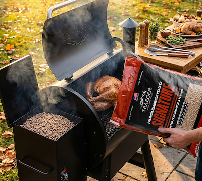
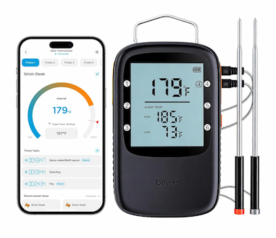
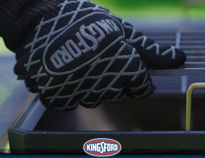

Pit Boss Sportsman 850 Pellet Smoker
The Pit Boss Sportsman 850 pellet smoker gives beginners steady heat and simple temperature control with Wi-Fi and Bluetooth connectivity to monitor both the temperature of the smoker and two built in temperature probes making it easy and convenient to monitor from your smart device.
View Product

Traeger Signature Wood Pellets
Traeger and Pit Boss both make fantastic pellet smokers and that isn't an exception with their wood pellets. Although I find the Traeger to have less dust. The Signature Blend has a blend of maple and cherry woods. It is very versatile and pairs well with anything you throw on the smoker.
View Product

Govee Meat Thermometer
If you didn't take my advice and purchase a pellet smoker grill without built in Wi-Fi that's okay. You can still get a great thermometer that will help you cook your meat safely without guessing or constantly running out to your pellet smoker. The Govee Meat Thermometer is affordable and offers this convenience.
View Product

Heat Resistant Gloves
Gloves make it safer to handle hot grates, trays, and wrapped meat. With that said, the Kingsford BBQ gloves offer a glove that is easy to throw on and take off and made of a cotton so they breathe well and don't retain the heat along with having a silicone coating that grips well and is extremely heat resistant.
View Product